I n this chapter we shall attempt a novel form of exposition. By selecting eight pairs of companies which appear next to each other, or nearly so, on the stock-exchange list we hope to bring home in a concrete and vivid manner some of the many varieties of character, financial structure, policies, performance, and vicissitudes of corporate enterprises, and of the investment and speculative attitudes found on the financial scene in recent years. In each comparison we shall comment only on those aspects that have a special meaning and import.
Pair I: Real Estate Investment Trust (Stores, Offices, Factories, etc.) and Realty Equities Corp. of New York (Real Estate Investment; General Construction)
In this first comparison we depart from the alphabetical order used for the other pairs. It has a special significance for us, since it seems to encapsulate, on the one hand, all that has been reasonable, stable, and generally good in the traditional methods of handling other people’s money, in contrast—in the other company—with the reckless expansion, the financial legerdemain, and the roller-coaster changes so often found in present-day corporate operations. The two enterprises have similar names, and for many years they appeared side by side on the American Stock Exchange list. Their stock-ticker symbols—REI and REC—could easily have been confused. But one of them is a staid New England trust, administered by three trustees, with operations dating back nearly a century, and with dividends paid continuously since 1889. It has kept throughout to the same type of prudent investments, limiting its expansion to a moderate rate and its debt to an easily manageable figure. *
The other is a typical New York-based sudden-growth venture, which in eight years blew up its assets from $6.2 million to $154 million, and its debts in the same proportion; which moved out from ordinary real-estate operations to a miscellany of ventures, including two racetracks, 74 movie theaters, three literary agencies, a public-relations firm, hotels, supermarkets, and a 26% interest in a large cosmetics firm (which went bankrupt in 1970). † This conglomeration of business ventures was matched by a corresponding variety of corporate devices, including the following:
Let us present first a few figures of the two enterprises as they appeared in 1960 (Table 18-1A). Here we find the Trust shares selling in the market for nine times the aggregate value of Equities stock. The Trust enterprise had a smaller relative debt and a better ratio of net to gross, but the price of the common was higher in relation to per-share earnings.
TABLE 18-1A. Pair 1. Real Estate Investment Trust vs. Realty Equities Corp. in 1960
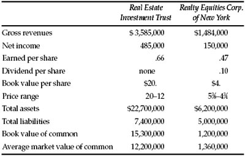
In Table 18-1B we present the situation about eight years later. The Trust had “kept the noiseless tenor of its way,” increasing both its revenues and its per-share earnings by about three-quarters. * But Realty Equities had been metamorphosed into something monstrous and vulnerable.
How did Wall Street react to these diverse developments? By paying as little attention as possible to the Trust and a lot to Realty Equities. In 1968 the latter shot up from 10 to 37 3/4 and the listed warrants from 6 to 36½, on combined sales of 2,420,000 shares. While this was happening the Trust shares advanced sedately from 20 to 30¼ on modest volume. The March 1969 balance sheet of Equities was to show an asset value of only $3.41 per share, less than a tenth of its high price that year. The book value of the Trust shares was $20.85.
TABLE 18-1B. Pair 1.
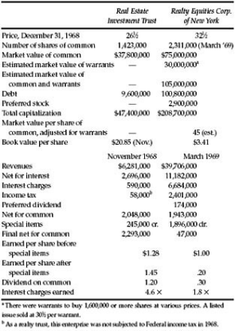
The next year it became clear that all was not well in the Equities picture, and the price fell to 9½. When the report for March 1970 appeared the shareholders must have felt shell-shocked as they read that the enterprise had sustained a net loss of $13,200,000, or $5.17 per share—virtually wiping out their former slim equity. (This disastrous figure included a reserve of $8,800,000 for future losses on investments.) Nonetheless the directors had bravely (?) declared an extra dividend of 5 cents right after the close of the fiscal year. But more trouble was in sight. The company’s auditors refused to certify the financial statements for 1969–70, and the shares were suspended from trading on the American Stock Exchange. In the over-the-counter market the bid price dropped below $2 per share. *
Real Estate Investment Trust shares had typical price fluctuations after 1969. The low in 1970 was 16½, with a recovery to 26 5/6 in early 1971. The latest reported earnings were $1.50 per share, and the stock was selling moderately above its 1970 book value of $21.60. The issue may have been somewhat overpriced at its record high in 1968, but the shareholders have been honestly and well served by their trustees. The Real Estate Equities story is a different and a sorry one.
Pair 2: Air Products and Chemicals (Industrial and Medical Gases, etc.) and Air Reduction Co. (Industrial Gases and Equipment; Chemicals)
Even more than our first pair, these two resemble each other in both name and line of business. The comparison they invite is thus of the conventional type in security analysis, while most of our other pairs are more heteroclite in nature. † “Products” is a newer company than “Reduction,” and in 1969 had less than half the other’s volume. * Nonetheless its equity issues sold for 25% more in the aggregate than Air Reduction’s stock. As Table 18-2 shows, the reason can be found both in Air Reduction’s greater profitability and in its stronger growth record. We find here the typical consequences of a better showing of “quality.” Air Products sold at 16½ times its latest earnings against only 9.1 times for Air Reduction. Also Air Products sold well above its asset backing, while Air Reduction could be bought at only 75% of its book value. † Air Reduction paid a more liberal dividend; but this may be deemed to reflect the greater desirability for Air Products to retain its earnings. Also, Air Reduction had a more comfortable working-capital position. (On this point we may remark that a profitable company can always put its current position in shape by some form of permanent financing. But by our standards Air Products was somewhat overbonded.)
If the analyst were called on to choose between the two companies he would have no difficulty in concluding that the prospects of Air Products looked more promising than those of Air Reduction. But did this make Air Products more attractive at its considerably higher relative price? We doubt whether this question can be answered in a definitive fashion. In general Wall Street sets “quality” above “quantity” in its thinking, and probably the majority of security analysts would opt for the “better” but dearer Air Products as against the “poorer” but cheaper Air Reduction. Whether this preference is to prove right or wrong is more likely to depend on the unpredictable future than on any demonstrable investment principle. In this instance, Air Reduction appears to belong to the group of important companies in the low-multiplier class. If, as the studies referred to above †† would seem to indicate, that group as a whole is likely to give a better account of itself than the high-multiplier stocks, then Air Reduction should logically be given the preference—but only as part of a diversified operation. (Also, a thorough-going study of the individual companies could lead the analyst to the opposite conclusion; but that would have to be for reasons beyond those already reflected in the past showing.)
SEQUEL : Air Products stood up better than Air Reduction in the 1970 break, with a decline of 16% against 24%. However, Reduction made a better comeback in early 1971, rising to 50% above its 1969 close, against 30% for Products. In this case the low-multiplier issue scored the advantage—for the time being, at least. *
TABLE 18-2. Pair 2.
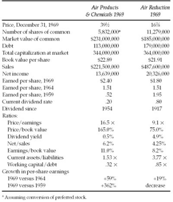
Pair 3: American Home Products Co. (drugs, cosmetics, household products, candy) and American Hospital Supply Co. (distributor and manufacturer of hospital supplies and equipment)
These were two “billion-dollar good-will” companies at the end of 1969, representing different segments of the rapidly growing and immensely profitable “health industry.” We shall refer to them as Home and Hospital, respectively. Selected data on both are presented in Table 18-3. They had the following favorable points in common: excellent growth, with no setbacks since 1958 (i.e., 100% earnings stability); and strong financial condition. The growth rate of Hospital up to the end of 1969 was considerably higher than Home’s. On the other hand, Home enjoyed substantially better profitability on both sales and capital. † (In fact, the relatively low rate of Hospital’s earnings on its capital in 1969—only 9.7%—raises the intriguing question whether the business then was in fact a highly profitable one, despite its remarkable past growth rate in sales and earnings.)
When comparative price is taken into account, Home offered much more for the money in terms of current (or past) earnings and dividends. The very low book value of Home illustrates a basic ambiguity or contradiction in common-stock analysis. On the one hand, it means that the company is earning a high return on its capital—which in general is a sign of strength and prosperity. On the other, it means that the investor at the current price would be especially vulnerable to any important adverse change in the company’s earnings situation. Since Hospital was selling at over four times its book value in 1969, this cautionary remark must be applied to both companies.
TABLE 18-3. Pair 3.
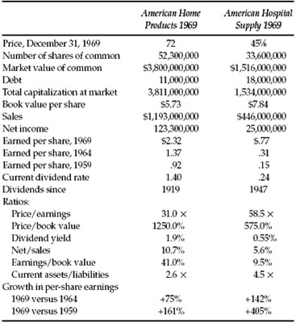
CONCLUSIONS : Our clear-cut view would be that both companies were too “rich” at their current prices to be considered by the investor who decides to follow our ideas of conservative selection. This does not mean that the companies were lacking in promise. The trouble is, rather, that their price contained too much “promise” and not enough actual performance. For the two enterprises combined, the 1969 price reflected almost $5 billion of good-will valuation. How many years of excellent future earnings would it take to “realize” that good-will factor in the form of dividends or tangible assets?
SHORT -TERM SEQUEL : At the end of 1969 the market evidently thought more highly of the earnings prospects of Hospital than of Home, since it gave the former almost twice the multiplier of the latter. As it happened the favored issue showed a microscopic decline in earnings in 1970, while Home turned in a respectable 8% gain. The market price of Hospital reacted significantly to this one-year disappointment. It sold at 32 in February 1971—a loss of about 30% from its 1969 close—while Home was quoted slightly above its corresponding level. *
Pair 4: H & R Block, Inc. (Income-Tax Service) and Blue Bell, Inc., (Manufacturers of Work Clothes, Uniforms, etc.)
These companies rub shoulders as relative newcomers to the New York Stock Exchange, where they represent two very different genres of success stories. Blue Bell came up the hard way in a highly competitive industry, in which eventually it became the largest factor. Its earnings have fluctuated somewhat with industry conditions, but their growth since 1965 has been impressive. The company’s operations go back to 1916 and its continuous dividend record to 1923. At the end of 1969 the stock market showed no enthusiasm for the issue, giving it a price/earnings ratio of only 11, against about 17 for the S & P composite index.
By contrast, the rise of H & R Block has been meteoric. Its first published figures date only to 1961, in which year it earned $83,000 on revenues of $610,000. But eight years later, on our comparison date, its revenues had soared to $53.6 million and its net to $6.3 million. At that time the stock market’s attitude toward this fine performer appeared nothing less than ecstatic. The price of 55 at the close of 1969 was more than 100 times the last reported 12-months’ earnings—which of course were the largest to date. The aggregate market value of $300 million for the stock issue was nearly 30 times the tangible assets behind the shares. * This was almost unheard of in the annals of serious stock-market valuations. (At that time IBM was selling at about 9 times and Xerox at 11 times book value.)
Our Table 18-4 sets forth in dollar figures and in ratios the extraordinary discrepancy in the comparative valuations of Block and Blue Bell. True, Block showed twice the profitability of Blue Bell per dollar of capital, and its percentage growth in earnings over the past five years (from practically nothing) was much higher. But as a stock enterprise Blue Bell was selling for less than one-third the total value of Block, although Blue Bell was doing four times as much business, earning 2½ times as much for its stock, had 5½ times as much in tangible investment, and gave nine times the dividend yield on the price.
INDICATED CONCLUSIONS : An experienced analyst would have conceded great momentum to Block, implying excellent prospects for future growth. He might have had some qualms about the dangers of serious competition in the income-tax-service field, lured by the handsome return on capital realized by Block. 1 But mindful of the continued success of such outstanding companies as Avon Products in highly competitive areas, he would have hesitated to predict a speedy flattening out of the Block growth curve. His chief concern would be simply whether the $300 million valuation for the company had not already fully valued and perhaps overvalued all that one could reasonably expect from this excellent business. By contrast the analyst should have had little difficulty in recommending Blue Bell as a fine company, quite conservatively priced.
TABLE 18-4. Pair 4.
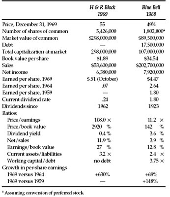
SEQUEL TO MARCH 1971. The 1970 near-panic lopped one-quarter off the price of Blue Bell and about one-third from that of Block. Both then joined in the extraordinary recovery of the general market. The price of Block rose to 75 in February 1971, but Blue Bell advanced considerably more—to the equivalent of 109 (after a three-for-two split). Clearly Blue Bell proved a better buy than Block as of the end of 1969. But the fact that Block was able to advance some 35% from that apparently inflated value indicates how wary analysts and investors must be to sell good companies short—either by word or deed—no matter how high the quotation may seem. *
Pair 5: International Flavors & Fragrances (Flavors, etc., for Other Businesses) and International Harvester Co. (Truck Manufacturer, Farm Machinery, Construction Machinery)
This comparison should carry more than one surprise. Everyone knows of International Harvester, one of the 30 giants in the Dow Jones Industrial Average. † How many of our readers have even heard of International Flavors & Fragrances, next-door neighbor to Harvester on the New York Stock Exchange list? Yet, mirabile dictu, IFF was actually selling at the end of 1969 for a higher aggregate market value than Harvester—$747 million versus $710 million. This is the more amazing when one reflects that Harvester had 17 times the stock capital of Flavors and 27 times the annual sales. Infact, only three years before, the net earnings of Harvester had been larger than the 1969 sales of Flavors! How did these extraordinary disparities develop? The answer lies in the two magic words: profitability and growth. Flavors made a remarkable showing in both categories, while Harvester left everything to be desired.
TABLE 18-5. Pair 5.
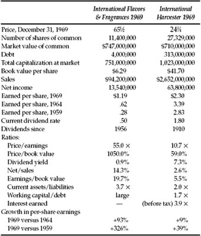
The story is told in Table 18-5. Here we find Flavors with a sensational profit of 14.3% of sales (before income tax the figure was 23%), compared with a mere 2.6% for Harvester. Similarly, Flavors had earned 19.7% on its stock capital against an inadequate 5.5% earned by Harvester. In five years the net earnings of Flavors had nearly doubled, while those of Harvester practically stood still. Between 1969 and 1959 the comparison makes similar reading. These differences in performance produced a typical stock-market divergence in valuation. Flavors sold in 1969 at 55 times its last reported earnings, and Harvester at only 10.7 times. Correspondingly, Flavors was valued at 10.4 times its book value, while Harvester was selling at a 41% discount from its net worth.
COMMENT AND CONCLUSIONS : The first thing to remark is that the market success of Flavors was based entirely on the development of its central business, and involved none of the corporate wheeling and dealing, acquisition programs, top-heavy capitalization structures, and other familiar Wall Street practices of recent years. The company has stuck to its extremely profitable knitting, and that is virtually its whole story. The record of Harvester raises an entirely different set of questions, but these too have nothing to do with “high finance.” Why have so many great companies become relatively unprofitable even during many years of general prosperity? What is the advantage of doing more than $2½ billion of business if the enterprise cannot earn enough to justify the shareholders’ investment? It is not for us to prescribe the solution of this problem. But we insist that not only management but the rank and file of shareholders should be conscious that the problem exists and that it calls for the best brains and the best efforts possible to deal with it. * From the standpoint of common-stock selection, neither issue would have met our standards of sound, reasonably attractive, and moderately priced investment. Flavors was a typical brilliantly successful but lavishly valued company; Harvester’s showing was too mediocre to make it really attractive even at its discount price. (Undoubtedly there were better values available in the reasonably priced class.)
SEQUEL TO 1971: The low price of Harvester at the end of 1969 protected it from a large further decline in the bad break of 1970. It lost only 10% more. Flavors proved more vulnerable and declined to 45, a loss of 30%. In the subsequent recovery both advanced, well above their 1969 close, but Harvester soon fell back to the 25 level.
Pair 6: McGraw Edison (Public Utility and Equipment; Housewares) McGraw-Hill, Inc. (Books, Films, Instruction Systems; Magazine and Newspaper Publishers; Information Services)
This pair with so similar names—which at times we shall call Edison and Hill—are two large and successful enterprises in vastly different fields. We have chosen December 31, 1968, as the date of our comparison, developed in Table 18-6. The issues were selling at about the same price, but because of Hill’s larger capitalization it was valued at about twice the total figure of the other. This difference should appear somewhat surprising, since Edison had about 50% higher sales and one-quarter larger net earnings. As a result, we find that the key ratio—the multiplier of earnings—was more than twice as great for Hill as for Edison. This phenomenon seems explicable chiefly by the persistence of a strong enthusiasm and partiality exhibited by the market toward shares of book-publishing companies, several of which had been introduced to public trading in the later 1960s. *
Actually, by the end of 1968 it was evident that this enthusiasm had been overdone. The Hill shares had sold at 56 in 1967, more than 40 times the just-reported record earnings for 1966. But a small decline had appeared in 1967 and a further decline in 1968. Thus the current high multiplier of 35 was being applied to a company that had already shown two years of receding profits. Nonetheless the stock was still valued at more than eight times its tangible asset backing, indicating a good-will component of not far from a billion dollars! Thus the price seemed to illustrate—in Dr. Johnson’s famous phrase—“The triumph of hope over experience.”
TABLE 18-6. Pair 6.
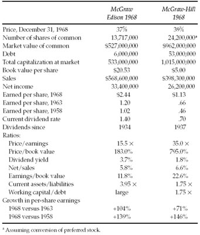
By contrast, McGraw Edison seemed quoted at a reasonable price in relation to the (high) general market level and to the company’s overall performance and financial position.
SEQUEL TO EARLY 1971: The decline of McGraw-Hill’s earnings continued through 1969 and 1970, dropping to $1.02 and then to $.82 per share. In the May 1970 debacle its price suffered a devastating break to 10—less than a fifth of the figure two years before. It had a good recovery thereafter, but the high of 24 in May 1971 was still only 60% of the 1968 closing price. McGraw Edison gave a better account of itself—declining to 22 in 1970 and recovering fully to 41½ in May 1971. *
McGraw-Hill continues to be a strong and prosperous company. But its price history exemplifies—as do so many other cases—the speculative hazards in such stocks created by Wall Street through its undisciplined waves of optimism and pessimism.
Pair 7: National General Corp. (A Large Conglomerate) and National Presto Industries (Diverse Electric Appliances, Ordnance)
These two companies invite comparison chiefly because they are so different. Let us call them “General” and “Presto.” We have selected the end of 1968 for our study, because the write-offs taken by General in 1969 made the figures for that year too ambiguous. The full flavor of General’s far-flung activities could not be savored the year before, but it was already conglomerate enough for anyone’s taste. The condensed description in the Stock Guide read “Nation-wide theatre chain; motion picture and TV production, savings and loan assn., book publishing.” To which could be added, then or later, “insurance, investment banking, records, music publishing, computerized services, real estate—and 35% of Performance Systems Inc. (name recently changed from Minnie Pearl’s Chicken System Inc.).” Presto had also followed a diversification program, but in comparison with General it was modest indeed. Starting as the leading maker of pressure cookers, it had branched out into various other household and electric appliances. Quite differently, also, it took on a number of ordnance contracts for the U.S. government.
Our Table 18-7 summarizes the showing of the companies at the end of 1968. The capital structure of Presto was as simple as it could be—nothing but 1,478,000 shares of common stock, selling in the market for $58 million. Contrastingly, General had more than twice as many shares of common, plus an issue of convertible preferred, plus three issues of stock warrants calling for a huge amount of common, plus a towering convertible bond issue (just given in exchange for stock of an insurance company), plus a goodly sum of nonconvertible bonds. All this added up to a market capitalization of $534 million, not counting an impending issue of convertible bonds, and $750 million, including such issue. Despite National General’s enormously greater capitalization, it had actually done considerably less gross business than Presto in their fiscal years, and it had shown only 75% of Presto’s net income.
The determination of the true market value of General’s common-stock capitalization presents an interesting problem for security analysts and has important implications for anyone interested in the stock on any basis more serious than outright gambling. The relatively small $4½ convertible preferred can be readily taken care of by assuming its conversion into common, when the latter sells at a suitable market level. This we have done in Table 18-7. But the warrants require different treatment. In calculating the “full dilution” basis the company assumes exercise of all the warrants, and the application of the proceeds to the retirement of debt, plus use of the balance to buy in common at the market. These assumptions actually produced virtually no effect on the earnings per share in calendar 1968—which were reported as $1.51 both before and after allowance for dilution. We consider this treatment illogical and unrealistic. As we see it, the warrants represent a part of the “common-stock package” and their market value is part of the “effective market value” of the common-stock part of the capital. (See our discussion of this point on p. 415 above.) This simple technique of adding the market price of the warrants to that of the common has a radical effect on the showing of National General at the end of 1968, as appears from the calculation in Table 18-7. In fact the “true market price” of the common stock turns out to be more than twice the quoted figure. Hence the true multiplier of the 1968 earnings is more than doubled—to the inherently absurd figure of 69 times. The total market value of the “common-stock equivalents” then becomes $413 million, which is over three times the tangible assets shown therefor.
TABLE 18-7. Pair 7.
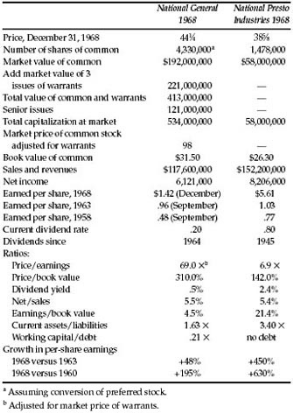
These figures appear the more anomalous when comparison is made with those of Presto. One is moved to ask how could Presto possibly be valued at only 6.9 times its current earnings when the multiplier for General was nearly 10 times as great. All the ratios of Presto are quite satisfactory—the growth figure suspiciously so, in fact. By that we mean that the company was undoubtedly benefiting considerably from its war work, and the shareholders should be prepared for some falling off in profits under peacetime conditions. But, on balance, Presto met all the requirements of a sound and reasonably priced investment, while General had all the earmarks of a typical “conglomerate” of the late 1960s vintage, full of corporate gadgets and grandiose gestures, but lacking in substantial values behind the market quotations.
SEQUEL : General continued its diversification policy in 1969, with some increase in its debt. But it took a whopping write-off of millions, chiefly in the value of its investment in the Minnie Pearl Chicken deal. The final figures showed a loss of $72 million before tax credit and $46.4 million after tax credit. The price of the shares fell to 16½ in 1969 and as low as 9 in 1970 (only 15% of its 1968 high of 60). Earnings for 1970 were reported as $2.33 per share diluted, and the price recovered to 28½ in 1971. National Presto increased its per-share earnings somewhat in both 1969 and 1970, marking 10 years of uninterrupted growth of profits. Nonetheless its price declined to 21½ in the 1970 debacle. This was an interesting figure, since it was less than four times the last reported earnings, and less than the net current assets available for the stock at the time. Late in 1971 we find the price of National Presto 60% higher, at 34, but the ratios are still startling. The enlarged working capital is still about equal to the current price, which in turn is only 5½ times the last reported earnings. If the investor could now find ten such issues, for diversification, he could be confident of satisfactory results. *
Pair 8: Whiting Corp. (Materials-Handling equipment) and Willcox & Gibbs (Small Conglomerate)
This pair are close but not touching neighbors on the American Stock Exchange list. The comparison—set forth in Table 18-8A—makes one wonder if Wall Street is a rational institution. The company with smaller sales and earnings, and with half the tangible assets for the common, sold at about four times the aggregate value of the other. The higher-valued company was about to report a large loss after special charges; it had not paid a dividend in thirteen years. The other had a long record of satisfactory earnings, had paid continuous dividends since 1936, and was currently returning one of the highest dividend yields in the entire common-stock list. To indicate more vividly the disparity in the performance of the two companies we append, in Table 18-8B, the earnings and price record for 1961–1970.
Table 18-8A. Pair 8.
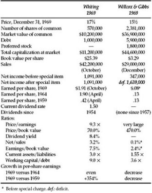
TABLE 18-8B. Ten-Year Price and Earnings Record of Whiting and Willcox & Gibbs
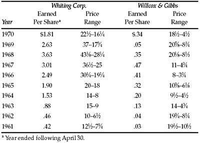
The history of the two companies throws an interesting light on the development of medium-sized businesses in this country, in contrast with much larger-sized companies that have mainly appeared in these pages. Whiting was incorporated in 1896, and thus goes back at least 75 years. It seems to have kept pretty faithfully to its materials-handling business and has done quite well with it over the decades. Willcox & Gibbs goes back even farther—to 1866—and was long known in its industry as a prominent maker of industrial sewing machines. During the past decade it adopted a policy of diversification in what seems a rather outlandish form. For on the one hand it has an extraordinarily large number of subsidiary companies (at least 24), making an astonishing variety of products, but on the other hand the entire conglomeration adds up to mighty small potatoes by usual Wall Street standards.
The earnings developments in Whiting are rather characteristic of our business concerns. The figures show steady and rather spectacular growth from 41 cents a share in 1960 to $3.63 in 1968. But they carried no assurance that such growth must continue indefinitely. The subsequent decline to only $1.77 for the 12 months ended January 1971 may have reflected nothing more than the slowing down of the general economy. But the stock price reacted in severe fashion, falling about 60% from its 1968 high (43½) to the close of 1969. Our analysis would indicate that the shares represented a sound and attractive secondary-issue investment—suitable for the enterprising investor as part of a group of such commitments.
SEQUEL : Willcox & Gibbs showed a small operating loss for 1970. Its price declined drastically to a low of 4½, recovering in typical fashion to 9½ in February 1971. It would be hard to justify that price statistically. Whiting had a relatively small decline, to 16 3/4 in 1970. (At that price it was selling at just about the current assets alone available for the shares). Its earnings held at $1.85 per share to July 1971. In early 1971 the price advanced to 24½, which seemed reasonable enough but no longer a “bargain” by our standards. *
General Observations
The issues used in these comparisons were selected with some malice aforethought, and thus they cannot be said to present a random cross-section of the common-stock list. Also they are limited to the industrial section, and the important areas of public utilities, transportation companies, and financial enterprises do not appear. But they vary sufficiently in size, lines of business, and qualitative and quantitative aspects to convey a fair idea of the choices confronting an investor in common stocks.
The relationship between price and indicated value has also differed greatly from one case to another. For the most part the companies with better growth records and higher profitability have sold at higher multipliers of current earnings—which is logical enough in general. Whether the specific differentials in price/earnings ratios are “justified” by the facts—or will be vindicated by future developments—cannot be answered with confidence. On the other hand we do have quite a few instances here in which a worthwhile judgment can be reached. These include virtually all the cases where there has been great market activity in companies of questionable underlying soundness. Such stocks not only were speculative—which means inherently risky—but a good deal of the time they were and are obviously overvalued. Other issues appeared to be worth more than their price, being affected by the opposite sort of market attitude—which we might call “underspeculation”—or by undue pessimism because of a shrinkage in earnings.
TABLE 18-9. Some Price Fluctuations of Sixteen Common Stocks (Adjusted for Stock Splits Through 1970)
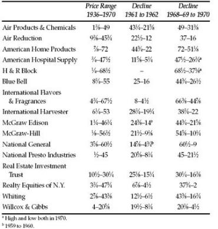
In Table 18-9 we provide some data on the price fluctuations of the issues covered in this chapter. Most of them had large declines between 1961 and 1962, as well as from 1969 to 1970. Clearly the investor must be prepared for this type of adverse market movement in future stock markets. In Table 18-10 we show year-to-year fluctuations of McGraw-Hill common stock for the period 1958–1970. It will be noted that in each of the last 13 years the price either advanced or declined over a range of at least three to two from one year to the next. (In the case of National General fluctuations of at least this amplitude both upward and downward were shown in each two-year period.)
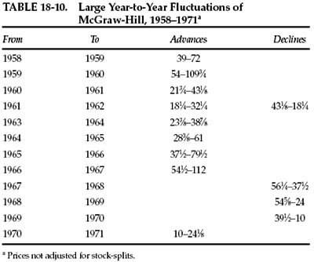
In studying the stock list for the material in this chapter, we were impressed once again by the wide difference between the usual objectives of security analysis and those we deem dependable and rewarding. Most security analysts try to select the issues that will give the best account of themselves in the future, in terms chiefly of market action but considering also the development of earnings. We are frankly skeptical as to whether this can be done with satisfactory results. Our preference for the analyst’s work would be rather that he should seek the exceptional or minority cases in which he can form a reasonably confident judgment that the price is well below value. He should be able to do this work with sufficient expertness to produce satisfactory average results over the years.